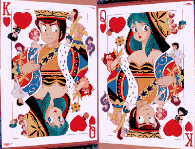

Urusei Yatsura

From the Anime Pocket Guide:
Cast:
Lum ......................................... Fumi Hirano
Ataru Moroboshi ......................... Toshio Furukawa
Shinobu Miyake ............................ Saeko Shimazu
Shutaro Mendo .............................. Akira Kamiya
Ryoko Mendo ................................. Mami Koyama
Ryunosuke Fujinami ........................ Mayumi Tanaka
Benten ........................................ Yuko Mita
Oyuki ...................................... Noriko Ohara
Ran ........................................... You Inoue
Megane .................................... Shigeru Chiba
Chibi .................................... Issei Futamata
Cherry .................................... Ichirou Nagai
Onsen-mark ............................ Michihiro Ikemizu
Tsubame Ozuno ............................ Kazuhiko Inoue
Asuka Mizunokouji ........................ Sumi Shimamoto
Ten's Mother ............................. Sumi Shimamoto
Elle Barakumi (UY1:Only You) ......... Yoshiko Sakakibara
Rara (UY3:Remember my Love) ..... Sumi Shimamoto
Karla (UY5:Boy meets Girl) ............ You Inoue
Description:
One day, an alien fleet appeared and was going to invade the
Earth. Earth had only once chance: if a randomly selected Earth-
man defeated an alien in a game of tag, then Earth would be
spared. The computers picked a high school lech named Ataru
Moroboshi. When Ataru found out, he hid behind his girlfriend
Shinobu...until he saw his opponent: a cute girl in a tiger-
striped bikini named Lum. All he has to do is grab Lum's horns
before 10 days are up. The horny Ataru was *very* willing to do
just that :-). On the first day, Ataru dashed toward Lum...who
flew off. Ataru screamed that nobody told him that Lum could
*fly*! Day after day, Ataru kept trying and failing. On the
last night, Shinobu said that she'd marry Ataru if he won. The
next day, Ataru cheated...and won the match. *Then* he said he
would now be married. Baaaad timing...Lum took it to mean that
he wanted to marry *her*. Now, the girl-chasing Ataru has a
devoted and loving 'wife' who will fry him if he even looks at
another girl. Oh, didn't I mention Lum's electric shock power?
A romantic comedy created by the talented Rumiko Takahashi.
Other Resources
Anime Video Game Resource Center © 1998 by Luis A. Cruz